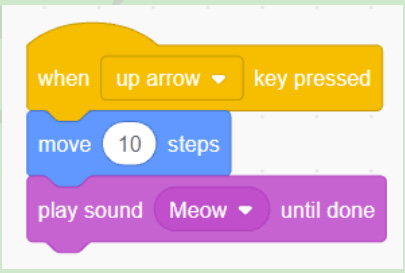
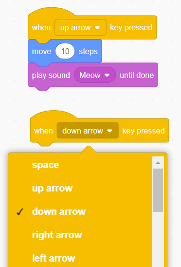

Then, connect the ‘move steps’ block to the ‘when key pressed’ block, as shown in Figure 42.
Click on the ‘Sound’ block menu.
Drag and drop the block ‘play sound until done’ into the script area. Then, connect that block to the ‘move steps’ block, as shown in Figure 42.

After that, repeat the previous steps to create a program for the ‘arrow down’, as guided in step 8.
Click the ‘Event’ block menu.
Drag and drop the block ‘when key pressed’ into the writing into the script area shown in Figure 43. Place that block at the bottom of the script area. Then select ‘down arrow’.
